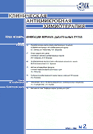

Клиническая Антимикробная Химиотерапия (КАХ)
Журнал расчитан на врачей разных специальностей (терапевтов, хирургов, гинекологов, педиатров, реаниматологов и др.), которые в своей повседневной практике применяют антимикробные препараты для лечения больных с бактериальными инфекциями. Бесплатная рассылка по медицинским учреждениям страны.
В настоящий момент не издаётся.
|
|

|